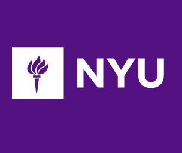
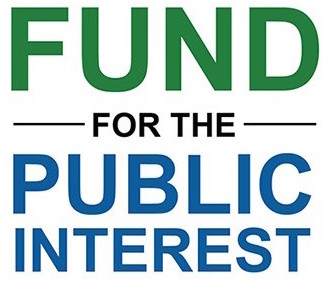
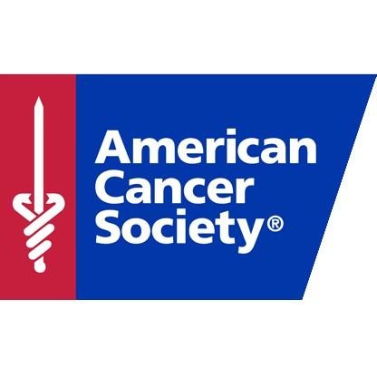

|  |
NYU Tandon School of Engineering
Position: Student Assistant I worked at the Office of the Dean at NYU Tandon. Alot of my work dealt with sorting and filing faculty files, assembling tenure review folders, preparing all the phyiscal files to be sent to a scanning company, among other projects. |
|
NYU Stern School of Business
Position: Research and Development Assistant I was responsible for many of the administrative duties necessary to maintain relationships with alumni. This included extensively using Advance database (software used for fundraising) and MS Excel to create registration lists, contact alumni and update their information, and assist in event preparation. |
|  |
Fund for the Public Interest
Position: Lead Intern I worked on two causes during my internship: to reduce the amount high fructose corn syrup in everyday food items and to ban fracking (a dangerous method of releasing natural gas). Our team went out and collected signatures on the streets of Berkeley, while other members canvassed to collect donations. I worked on a few campaign action projects during this time. I was in charge of organizing the press conference for the release of the annual "Apples to Twinkies" report. |
|  |
American Cancer Society: Discovery Shop
Position: Volunteer/Shift Supervisor I volunteered in a thrift store under the American Cancer Society that sold donations in order to raise money for cancer research and relief for cancer patients and their families. |